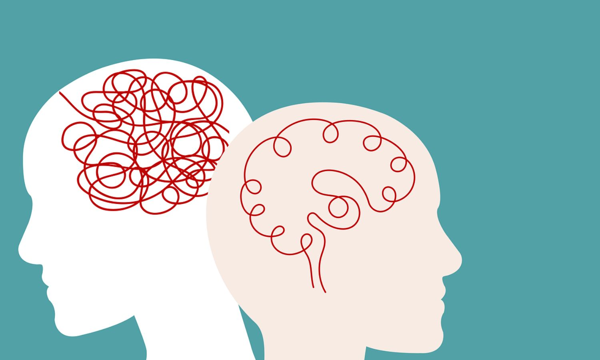
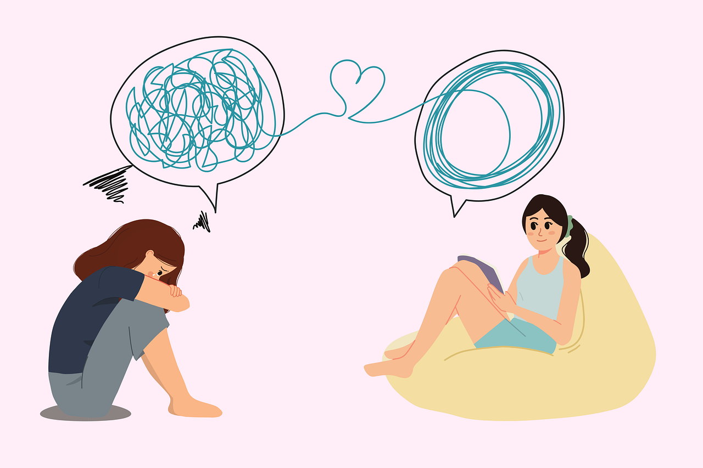
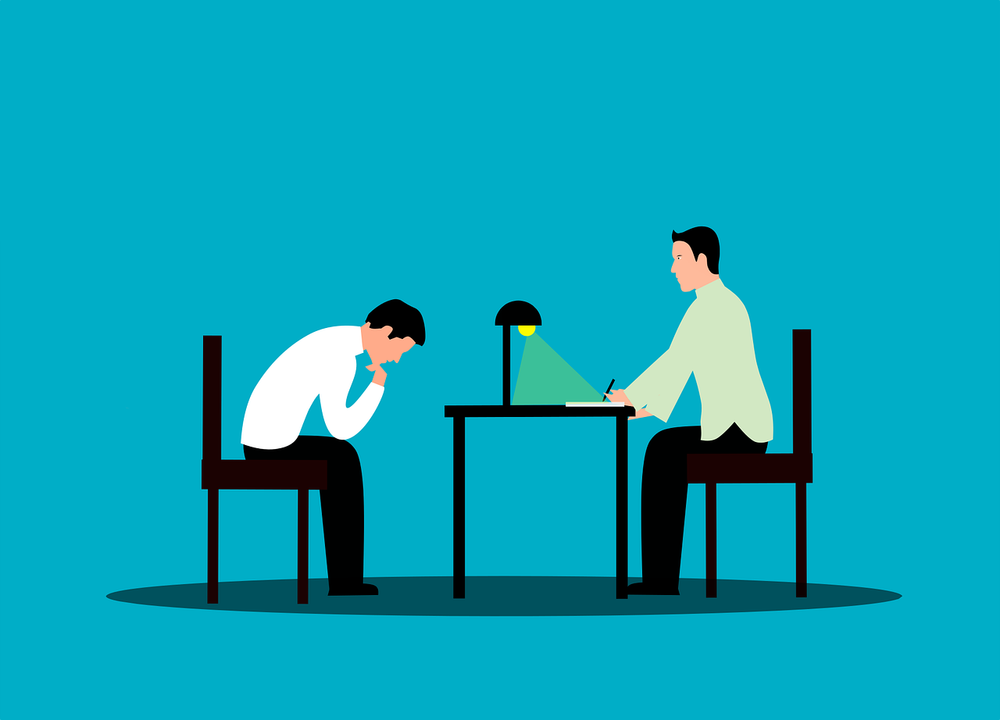
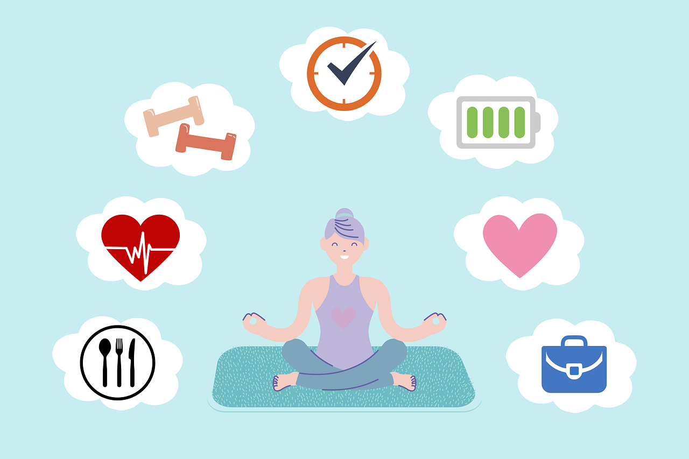

Excelente!!
Aqui te dejamos algunos tips de donde puedes empezar:
- Hablar con alguien de confianza: La comunicación abierta con un amigo cercano, un familiar o un profesional de la salud puede marcar una gran diferencia. 
- Cuidar de la salud física: Mantener una dieta balanceada, dormir lo suficiente y hacer ejercicio regularmente pueden tener un impacto positivo en el estado de ánimo.
- Establecer una rutina: Tener un horario fijo para actividades diarias puede proporcionar una sensación de normalidad y control.
- Evitar el aislamiento: Mantenerse conectado con otros, aunque sea a través de mensajes o llamadas, es crucial. 
- Técnicas de relajación: Practicar mindfulness, meditación, o simplemente tomarse un tiempo para uno mismo para realizar actividades relajantes.
- Evitar el consumo de sustancias: Limitar o evitar el alcohol y otras sustancias que pueden empeorar los síntomas de la depresión.
- Buscar ayuda profesional: Un terapeuta o consejero puede ofrecer estrategias específicas y personalizadas para enfrentar la depresión. 
- Ser paciente y amable contigo mismo: La recuperación puede llevar tiempo, así que es importante ser compasivo contigo mismo durante este proceso.
- Participar en actividades que te gusten: Dedicar tiempo a hobbies o actividades que normalmente disfrutas puede ser una forma de distraerte y levantar el ánimo. 